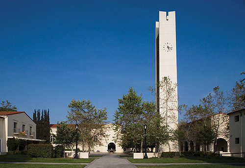

Pomona is a liberal arts college located in Claremont, California, which is thirty-five miles east of Los Angeles. The college is in a suburban setting. Pomona operates under a semester-based academic schedule. Pomona is a member of the Claremont consortium, which also includes Claremont Mckenna, Harvey Mudd, Scripps, and Pitzer. Students may take courses at any of these colleges. Pomona has a relatively small student body size relative to other liberal arts college. Their 1,613 students make-up a 8:1 student faculty ratio on Pomona�s campus. The top five most popular majors are: economics, mathematics, neuroscience, molecular biology, and political sciences. Pomona is known for its focus on a strong 'English education,' which emphasizes small classes and strong student-faculty relationships. A well-known attraction of Pomona is 2/3rds of its students reside in single dorms. While there are three fraternities on campus, over 95% of Pomona�s students live independently.
